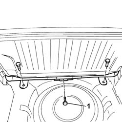
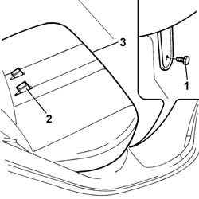

7050A20 one-piece rear seat cushion - r r
- Path
- Procedures > 70 FITTINGS > 7050 REAR SEATS > 7050A rear seat assembly > 7050A20 one-piece rear seat cushion - r r
- Kind
- repair procedure (removal / refitting; the operation number is the code)
- Applies to
- all engines; all production periods
- Interactive page
- https://sloeber94.github.io/elrnDB-fPnd/en/#/2753266
Applies to: all engines; all production periods
 Removing
Removing
 Refitting
Refitting7040B10 load platform (luggage platform) trim - r+r
1. Undo the rear fixing bolts.

Applies to: all engines; all production periods
1. Undo the front fixing bolts.
2. Release the seat belt mounting rods.
3. Remove the rear seat cushion.

Applies to: all engines; all production periods
Refitting
RemovingPlace the seat in position, fitting the seat belt mounting rods in the special housings.
Tighten the front and rear fixing bolts to the recommended torque.
 | Fastening | Component | Ø | Value (daNm) |
|---|---|---|---|---|
- | Bolt | REAR SEAT CUSHION. | M10 x 1.25 | 4 |
Topics linked from this page (2)
Topics that link to this page (22)
- 5505A90 rear wiring bundle - r r or replace
- 5505C26 bonnet wiring - r r
- 5570T20 radio aerial amplifier - r r
- 5580C50 (HEAD- BAG MODULE ) (one), left or right - R.R.
- 5580H12 parking obstacle detection device buzzer - r r
- 7010A34 rear side door compartment seal r r
- 7015A24 tailgate hinges - repair or replace with tailgate removed
- 7030B24 sliding roof blind,front or rear - r r
- 7030B47 GUIDE device for sliding roof movement control cables - R.R .
- 7030B50 sun roof guide , one , lh or rh - r r
- 7030B70 sun-roof control switch - r+r
- 7030B74 sun-roof wiring harness - r r or replace
- 7040B06 side trim (one) lh or rh, load compartment/load platform - r r
- 7040H10 roof panel lining - r r
- 7040H16 roof panel lining - r r
- 7040H50 rear panel - r r
- 7040H66 LEFT REAR SIDE TRIM, WITH REAR PARCEL SHELF SUPPORT - R.R .
- 7040L10 cabin floor carpet - r r
- 7050A56 rear seat cushion ribbing - r r
- 7050D20 Rear seat CUSHION COVER - R.R.
- 7065B10 l/h or r/h rear safety belt (one) - r+r
- 7065B14 REAR SEAT BELT ANCHORAGE ROD , (ONE), LEFT OR RIGHT - R.R.